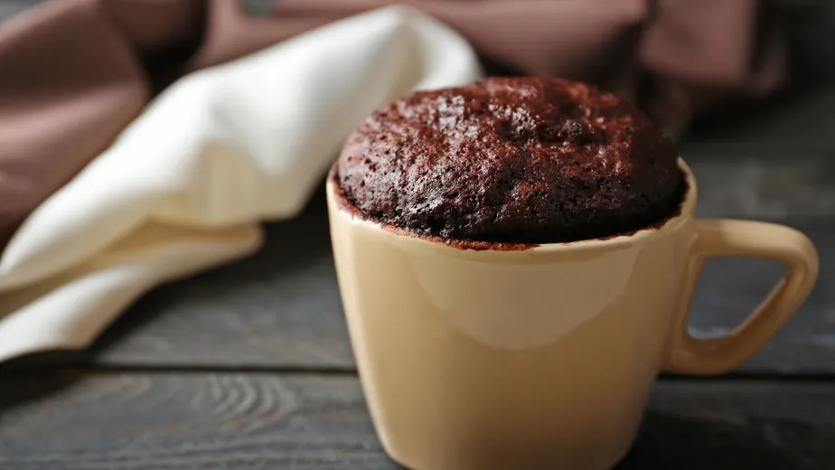

Bolo de Caneca de Chocolate
Sobremesa em 3 minutos
Dificuldade: Muito Fácil

Cuidado: este bolo fica muito fofinho, quente e viciante!
Ingredientes:
- 1 ovo
- 2 colheres de achocolatado
- 3 colheres de farinha de trigo
Modo de Preparo:
- Misture tudo dentro de uma caneca grande.
- Coloque no micro-ondas por 3 minutos.
- Espere esfriar um pouco e coma.
volte para a página inicial de receitas aqui